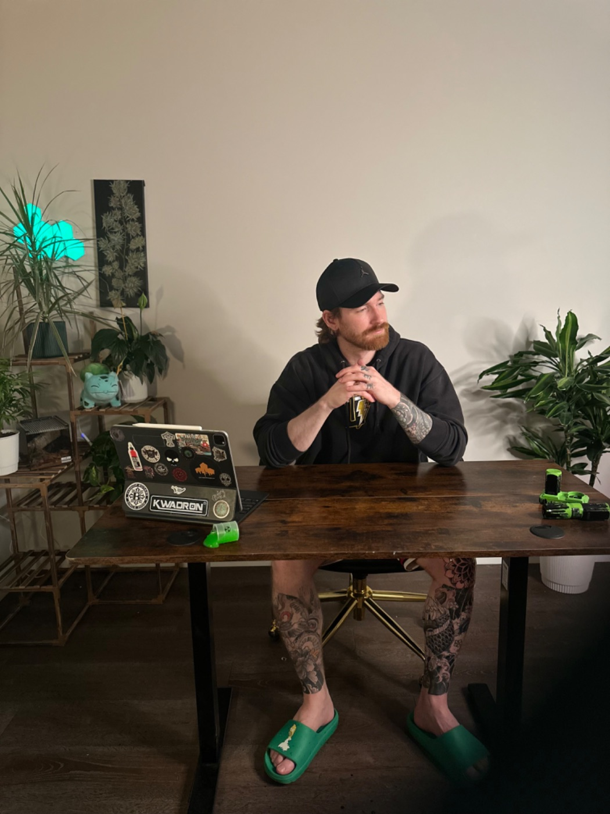

September 16, 2026
Tattoo Tips & Tricks: What to Know Before Getting a New Tattoo in Calgary

Getting a new tattoo is exciting, but choosing the right design, artist, placement, and studio can make a huge difference in your experience and the final result.
Whether you're getting your **first tattoo in Calgary** or you're already covered in ink and planning your next piece, taking a little time to prepare can help you get a tattoo you'll be proud to wear for years.
At **Newfangled Ink in Calgary, Alberta**, we believe the tattoo process should be about more than simply putting ink into your skin. It's about creating a piece of artwork that fits your ideas, your body, and your personal style.
Here are some of our top tattoo tips and tricks for anyone considering a new tattoo.
---
## 1. Take Your Time Choosing Your Tattoo Design
One of the biggest mistakes people can make is rushing into a tattoo simply because an idea sounds cool in the moment.
You don't necessarily need to spend years thinking about a tattoo, but give yourself enough time to make sure you actually like the concept.
Save reference photos. Look at different versions of the subject. Think about what you like about each example.
For example, if you're interested in a **black and grey realism tattoo**, don't just save a picture of a particular tattoo. Think about what you like about it:
* The shading * The contrast * The composition * The level of detail * The subject * The overall mood
This gives your tattoo artist much more information to work with.
### Pro tip:
Don't feel like you need to find an exact tattoo you want copied.
Instead, bring several reference images and explain what you like about each one. Your artist can use those references to create something specifically designed for you.
---
## 2. Choose a Tattoo Artist Based on Their Style
Not every tattoo artist specializes in every style.
Some artists focus on fine line tattoos. Others specialize in traditional, Japanese, blackwork, colour realism, illustrative tattoos, or **black and grey realism**.
When looking for a **tattoo artist in Calgary**, spend time looking through their portfolio.
Ask yourself:
**Does their work consistently look like the style I want?**
If you're looking for a realistic tattoo, look for an artist who regularly produces realistic work.
If you want a large black and grey piece, look for examples of healed and completed black and grey work.
Your artist's portfolio is one of the best indicators of whether their artistic style matches your idea.
---
## 3. Don't Choose a Tattoo Artist Based Only on Price
Price is obviously an important part of planning a tattoo, but it shouldn't be the only thing you consider.
A tattoo is a permanent piece of artwork, so choosing an artist simply because they're the cheapest option can create problems later.
Instead, consider:
* The artist's portfolio * Their experience * Their specialty * Their communication * The studio environment * Their approach to designing tattoos * Their hygiene and safety practices * Reviews and client experiences
Think of your tattoo as an investment in artwork rather than simply a purchase.
---
## 4. Think Carefully About Tattoo Placement
The same tattoo can look completely different depending on where it is placed.
When choosing your placement, think about:
**Size:** A highly detailed tattoo may need enough space for the details to remain readable.
**Body shape:** Your artist can help determine how the design should flow with the natural shape of your body.
**Visibility:** Consider whether you want the tattoo to be visible every day or easier to cover.
**Future tattoos:** If you're planning to build a sleeve or larger collection, consider how the tattoo might work with future pieces.
A good tattoo artist can help you determine whether your preferred placement and size will work with your design.
---
## 5. Don't Make a Detailed Tattoo Too Small
This is particularly important for **realism tattoos**.
Fine details need room.
Trying to squeeze a highly detailed portrait, animal, building, or other realistic subject into an extremely small space can make it difficult for the tattoo to maintain the intended detail over time.
Sometimes making a tattoo slightly larger actually produces a cleaner and better-looking result.
If you're unsure about sizing, ask your tattoo artist.
A professional artist should be able to explain why a particular size may work better for the design.
---
## 6. Bring Good Reference Photos to Your Consultation
One of the easiest ways to make your tattoo consultation more productive is to bring useful reference images.
Instead of sending 15 pictures of completely different tattoos, try to organize your references.
For example:
**Image 1:** The subject you like **Image 2:** The shading style you like **Image 3:** The composition you like **Image 4:** The overall mood you want
You can then explain:
> "I like the subject from this image, the shading from this one, and the darker atmosphere from this one."
That gives your artist creative direction without asking them to simply copy someone else's tattoo.
---
## 7. Be Open to Your Artist's Recommendations
You know what you want your tattoo to represent.
Your artist knows how to translate that idea into a tattoo.
Those two things should work together.
Sometimes your artist may recommend changing:
* The size * The placement * The orientation * The amount of detail * The contrast * The composition * The background
That doesn't mean they're ignoring your idea.
It can mean they're trying to make the tattoo work better as a piece of body art.
The best tattoo experiences usually involve communication between the client and artist rather than one person trying to completely control the creative process.
---
## 8. Prepare Properly for Your Tattoo Appointment
Your tattoo appointment will generally be more comfortable if you arrive prepared.
Before your appointment:
### Get a good night's sleep
Being well rested can make a long tattoo session easier to handle.
### Eat beforehand
Have a proper meal before your appointment so you aren't starting a potentially long session hungry.
### Stay hydrated
Bring water with you and make sure you've had enough fluids throughout the day.
### Wear appropriate clothing
Think about where you're getting tattooed and wear clothing that gives your artist easy access to the area while keeping you comfortable.
### Bring something to keep you occupied
For longer sessions, headphones, music, podcasts, or another quiet form of entertainment can make the time pass faster.
---
## 9. Don't Schedule Something Immediately After a Long Tattoo Session
If you're getting a large tattoo or sitting for several hours, give yourself some breathing room afterward.
You don't want to be watching the clock because you have somewhere else you desperately need to be.
Give yourself time to finish the tattoo, receive your aftercare instructions, and get home without rushing.
Long tattoo sessions can be physically tiring, so having the rest of your day relatively open can make the experience much more enjoyable.
---
## 10. Pay Attention to Studio Hygiene
Choosing a professional tattoo studio is extremely important.
According to Alberta Health Services, clients should expect a clean tattooing environment, single-use sterile needles and sharps, appropriate barriers, proper hand hygiene, and written and verbal aftercare information.
Before getting tattooed, don't be afraid to pay attention to the studio environment.
A professional tattoo studio should take hygiene and infection prevention seriously.
If you have questions about the studio's safety procedures, ask.
Your health is more important than getting tattooed quickly.
---
## 11. Don't Pick or Scratch Your Tattoo While It Heals
After your tattoo is finished, the healing process becomes your responsibility.
Your artist should provide you with specific aftercare instructions based on the tattoo and the products they use.
Generally, you want to avoid unnecessarily picking, scratching, or irritating the healing tattoo.
Follow the aftercare instructions provided by your tattoo artist rather than constantly changing your routine based on random advice you find online.
If you have concerns about how your tattoo is healing, contact your tattoo artist or an appropriate healthcare professional.
---
## 12. Protect Your Tattoo From the Sun
Sun exposure can affect the appearance of tattoos over time.
Once your tattoo has fully healed, protecting your skin from excessive sun exposure can help preserve the appearance of your tattoo.
This is especially worth considering if you're investing in a large piece or detailed **black and grey realism tattoo**.
Your tattoo is artwork on your skin. Taking care of your skin helps protect that artwork.
---
## 13. Don't Copy Another Artist's Tattoo
It's completely normal to use other tattoos as inspiration.
However, there's a difference between saying:
**"I like the composition and style of this tattoo."**
and:
**"I want this exact tattoo."**
Your artist should be able to take inspiration and create something original that fits your body and your ideas.
Bring references to communicate what you like, but give your artist room to create.
---
## 14. Don't Be Afraid to Ask Questions
If you're nervous about getting your first tattoo, that's completely understandable.
Ask questions.
You can ask your tattoo artist about:
* The design * Placement * Size * Estimated session length * Pricing * Preparation * The tattooing process * Healing * Aftercare * Future sessions
A good consultation should leave you feeling informed about the process.
---
# Getting Your First Tattoo in Calgary?
If you're searching for a **tattoo artist in Calgary, Alberta**, take your time and find an artist whose style matches the tattoo you actually want.
Don't choose an artist simply because they're nearby or because you found the cheapest price.
Look at their work. Ask questions. Discuss your ideas. Make sure you feel comfortable with the artist and the studio.
And most importantly, remember that your tattoo doesn't have to look exactly like something you found online.
Your artist can take your ideas and references and turn them into something designed specifically for you.
---
# Ready for Your Next Tattoo?
At **Newfangled Ink**, we work with clients in Calgary who are looking to turn their ideas into custom tattoos.
Whether you're planning your **first tattoo**, adding to an existing collection, or looking for a **custom black and grey realism tattoo in Calgary**, the consultation process is where we can talk through your idea, placement, size, and overall vision.
If you've been thinking about getting tattooed, don't overthink it — just start the conversation.
**Newfangled Ink — Calgary, Alberta**
**Custom Tattoos | Black & Grey | Realism | Tattoo Consultations**
Ready to start your next tattoo?
**Contact Newfangled Ink to submit your tattoo idea and request a consultation.**
Planning your next piece?
Send your idea, placement and references and we will map out the sessions it needs.